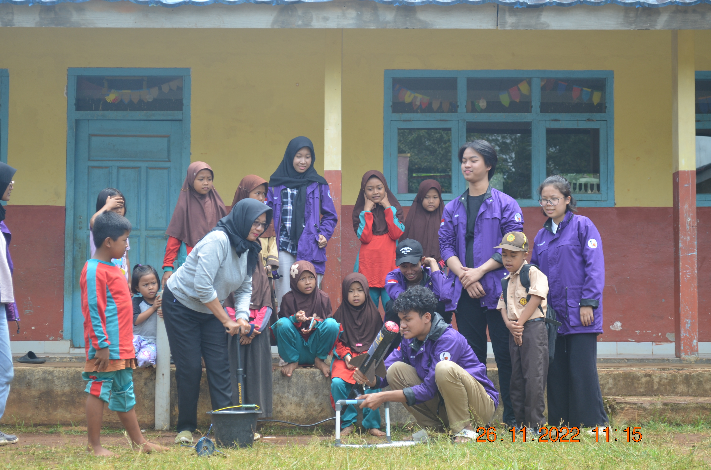
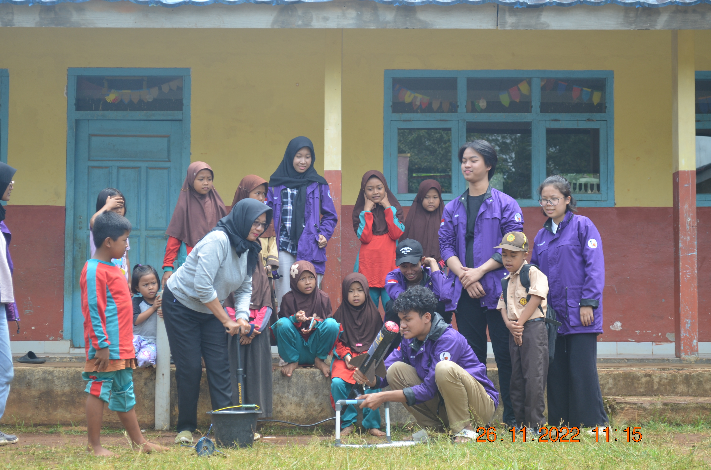
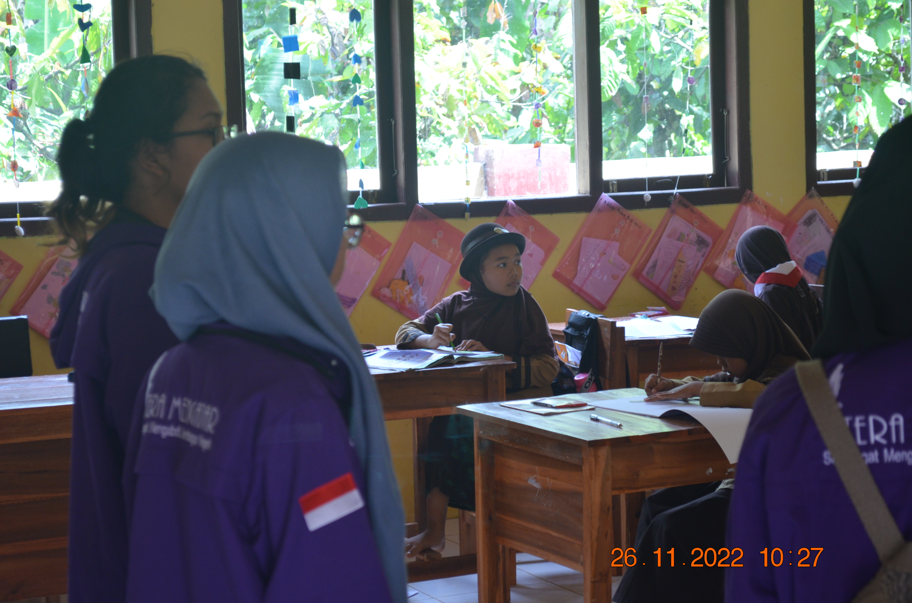
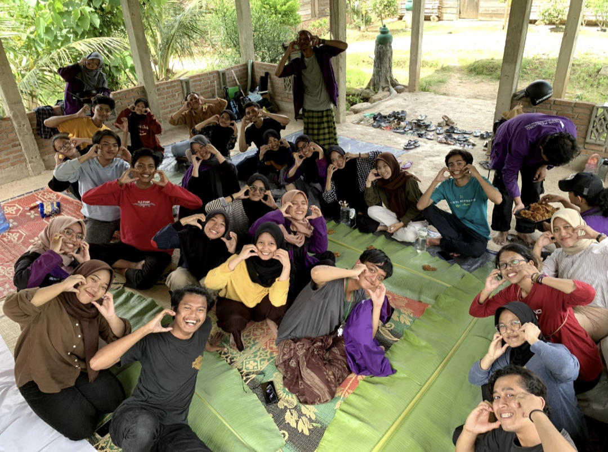
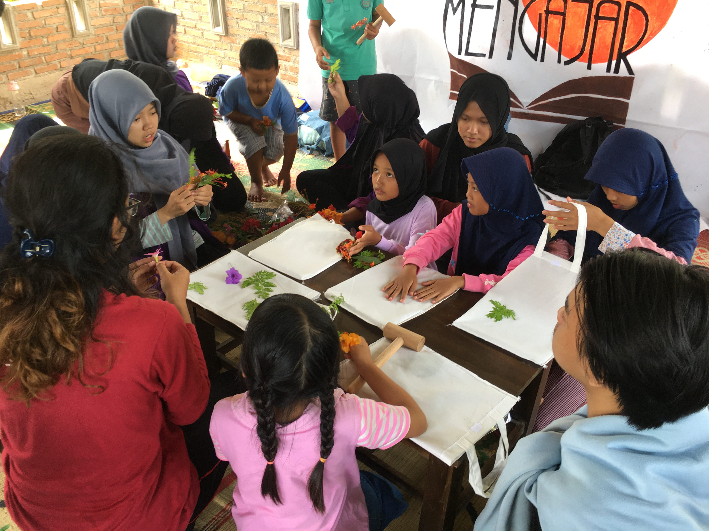
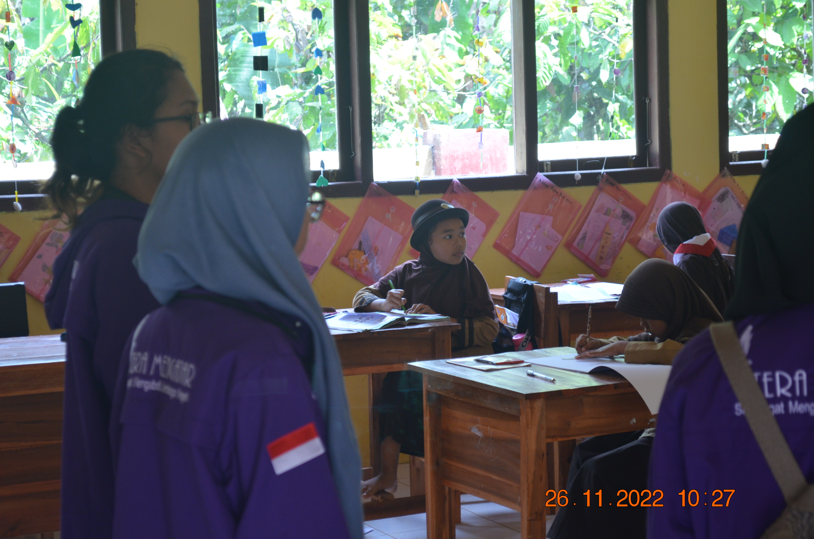
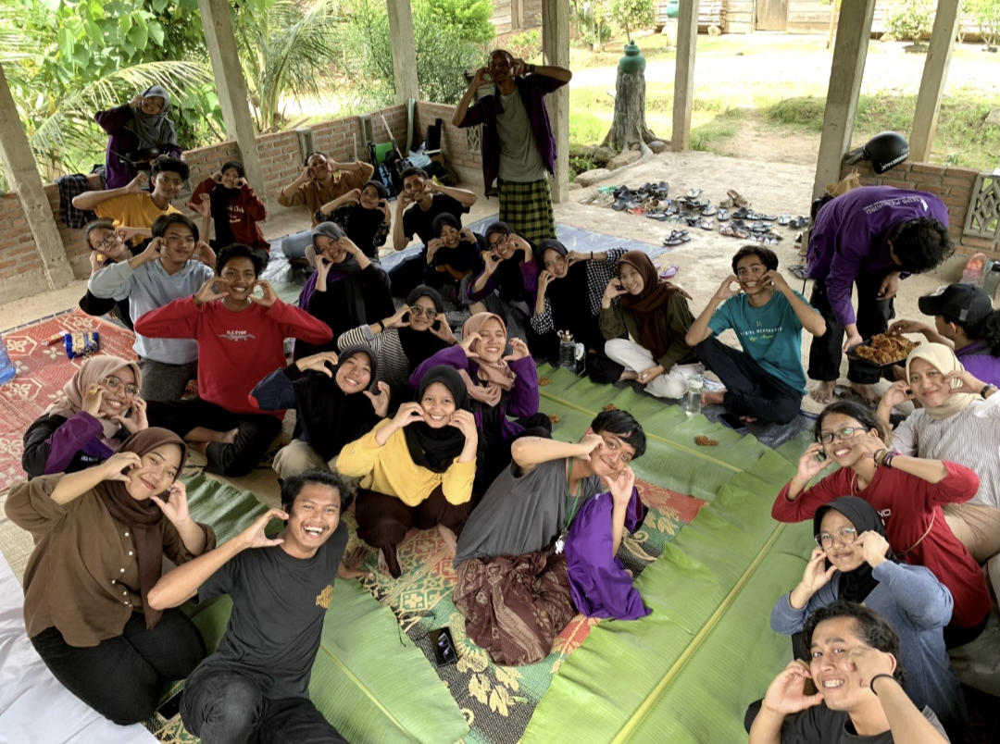
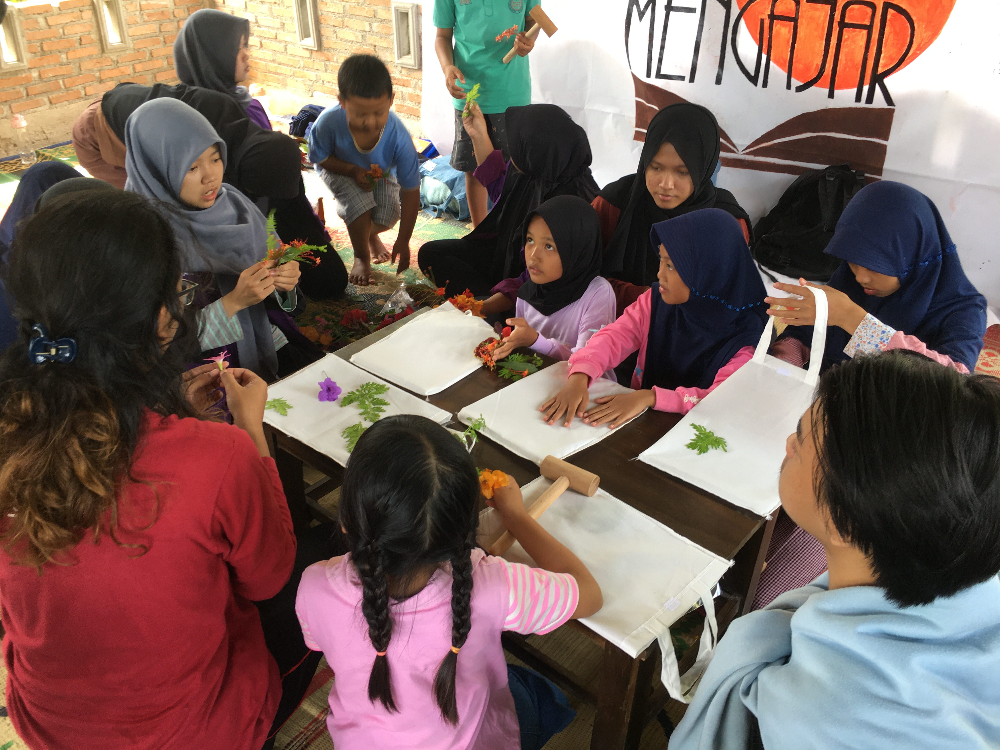

Desa Suban merupakan salah satu desa di Kecamatan Merbau Mataram, Kabupaten Lampung Selatan, Provinsi Lampung. Dalam segi pendidikan, Desa Suban ini termasuk daerah 3T (Tertinggal, Terdepan, dan Terluar). Untuk melaksanakan pembangunan yang adil dan merata, yang sesuai dengan tri dharma perguruan tinggi, ITERA MENGAJAR memberikan bantuan pendidikan dan juga motivasi semangat belajar kepada anak-anak agar bisa mengenyam pendidikan yang lebih tinggi lagi.
 

 







Desa Bogorejo merupakan salah satu desa di Kecamatan Gedong Tataan, Kabupaten Pesawaran, Provinsi Lampung. Dalam segi pendidikan, di Desa ini termasuk daerah 3T (Tertinggal, Terdepan, dan Terluar) Untuk melaksanakan pembangunan yang adil dan merata, yang sesuai dengan tri dharma perguruan tinggi, ITERA MENGAJAR memberikan bantuan pendidikan dan juga motivasi semangat belajar kepada anak-anak agar bisa mengenyam pendidikan yang lebih tinggi lagi.